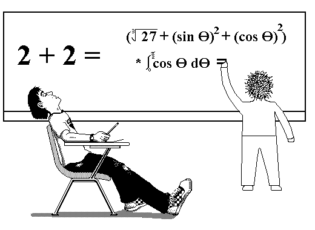
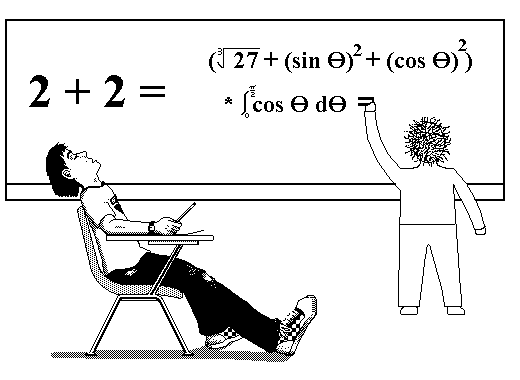
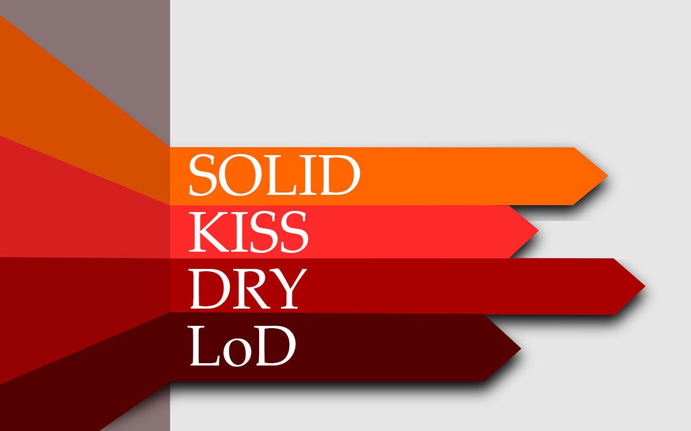
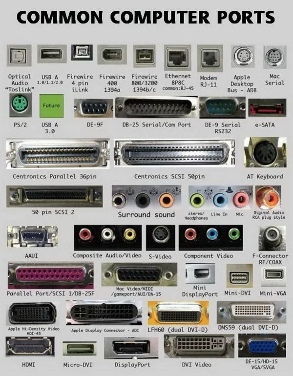
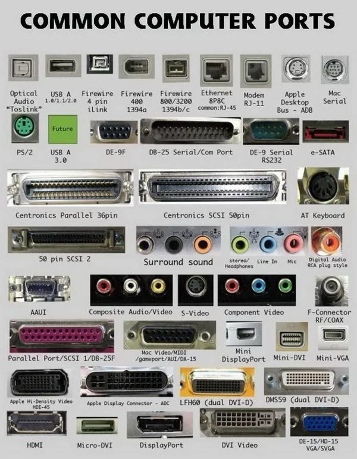

Principle KISS

Strategies in programming

What is the KISS Principle?

So many names

Who is the author?

First use

KISS in programming


 

Example
const a = (4 >> 1); //Why?
const b = (4 / 2);
if(a === b){
console.log (true)
}
Important note: For JS engines, the effectiveness of the shift operation is negated by the costly integer conversion.
KISS includes all principles
The basic criteria for the value of information
- RELIABILITY
- ACCESSIBILITY
- COMPREHENSIBILITY
Simplicity is very important
If the project is simple, it's easy to understand... Developing a simple project is not so easy. It takes time. For any program, however complex, the final decision comes from analyzing a huge amount of information. When the code is well designed it seems as if it could not be otherwise, however it is possible that its simplicity is achieved as a result of much mental labor (and a lot of refactoring). Doing the simple thing is difficult. If the structure of the code seems obvious, don't think it was given without difficulty.
Goodliffe Pete ©
simplicity of code is paramount
So, the KISS design principle proclaims that simplicity of code is paramount, because simple code is the most understandable.
Complicated code - bad code

Design patterns and KISS

A misconception about KISS
- Simple code was the first thing that came to mind
- Simple code is code without patterns and architecture
What is simple code?
- not complicated
- devoid of artificiality
- the most natural
- not difficult
- easy to understand
A little more history...
 
